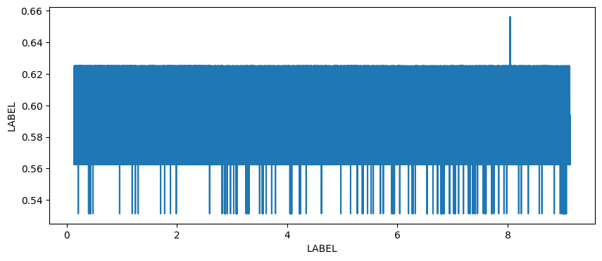

Importing LabChart (Python)#
This notebook will help you import and plot any exported .txt file from LabChart. Once you know how to use this notebook, you can use this to plot any exported text file from LabChart, from earthworms, to leeches, and beyond! It will also allow you to plot traces on top of each other.
To run this, you will need to upload an exported .txt file from LabChart into Colab. First, export the channels you’d like to plot. Then upload the exported file it to Colab.
Step 1. Setup#
Task: Run the cell below to import our necessary packages and configure the notebook environment. You do not need to change anything in this cell.
# Import our packages
import matplotlib.pyplot as plt
import numpy as np
# Run this cell to set up the notebook — no need to change anything here!
def load_recording(filename):
"""Load a LabChart .txt export and return (time, recording) arrays."""
try:
data = np.genfromtxt(filename, dtype=float, skip_header=6, delimiter='\t', encoding='unicode_escape')
except FileNotFoundError:
print(f'File "{filename}" was not found. Follow directions above for uploading to Colab and make sure the filename is correct.')
return None, None
except ValueError:
print('It looks like your data is the wrong shape, did you export the CURRENT SELECTION only?')
return None, None
if data.shape[1] ==2:
print(f'Loaded "{filename}" successfully.')
return data[:,0], data[:,1]
elif data.shape[1] == 3:
print(f'Loaded "{filename}" successfully. Using the third channel (column 3) for analysis.')
return data[:,0], data[:,2]
else:
print('Invalid data file. Please upload a .txt file exported from LabChart with one or two channels.')
return None, None
def align_recordings(time, recording, time2, recording2):
"""Trim two recordings (assumed same sampling rate) to the same length.
Returns (time_common, recording_trimmed, recording2_trimmed)."""
n = min(len(time), len(time2))
print(f'Trimmed both recordings to {n} samples ({time[:n][-1]:.3f} s).')
return time[:n], recording[:n], recording2[:n]
print('Packages imported and helper functions defined.')
Packages imported and helper functions defined.
Step 2. Import data#
Now that we have our notebook configured, we can import our data. We will import it as a numpy array.
Task: Upload your file into the same folder as this code and change the filename below to your filename.
# Change the filename to EXACTLY match your file
filename = 'recording.txt'
# (Optional) To overlay a second recording, change filename2 to your second filename.
# Leave as None if you only have one file.
filename2 = None
og_time, recording = load_recording(filename)
if filename2 is not None:
time2, recording2 = load_recording(filename2)
time, recording_trimmed, recording2_trimmed = align_recordings(og_time, recording, time2, recording2)
else:
time, recording_trimmed, recording2_trimmed = og_time, recording, None
Loaded "recording.txt" successfully. Using the third channel (column 3) for analysis.
Modify axes units (optional)#
LabChart data should export by volts and second by default. The cell below will ensure that you have a time vector, and if not, will generate one for you.
Note: Remember that if your data was collected at 40,000 Hz (40 kHz), this means that there is 1/40,000 (or 0.000025) seconds between each data point.
try:
print('\nTime between each data point is:')
print(time[1]-time[0],' seconds')
except NameError:
print('You do not currently have a known time axis.')
length = input('What is the length of your recording in seconds?')
time = np.linspace(0,float(length)+1,len(recording))
print(time)
Time between each data point is:
2.4999999999997247e-05 seconds
Instead of showing the axes in seconds, you might choose to show it in milliseconds. To do so, we should multiply the entire array by 1000, to convert from s to ms. You can multiply arrays in Python by taking the original array, and writing an expression to multiple it. For example:
array_s = np.array([0.000 , 0.0010 , 0.0020 , 0.0030 ])
array_ms = array_s * 1000
Task: Create an array of timestamps in milliseconds by multiplying
timeby 1000. Assign it totimestamps_ms. Check that this worked by printingtimestamps_ms.
# Convert into ms here
timestamps_ms = ...
Now you should have a timestamps_ms variable that you can plot with below, if you’d like!
Step 3. Plot data#
The code below will plot your data using plt.plot(). This function requires two inputs: x and y. When we’re plotting recordings, typically this means x = time, and y = voltage. If you’d like to plot your timestamps in milliseconds, you’ll need to replace time with timestamps_ms. You should also add x and y labels.
# Set up figure & plot
fig,ax = plt.subplots(figsize=(10,4))
# Plot the first recording
plt.plot(time, recording_trimmed, label=filename)
# Plot the second recording if one was loaded
if recording2_trimmed is not None:
plt.plot(time, recording2_trimmed, label=filename2)
plt.legend()
# You may need to change the x label!
plt.xlabel('LABEL')
# You may need to change the y label!
plt.ylabel('LABEL')
# This makes the axis labels print without scientific notation
# You can comment this line if you do not wish to use it
ax.ticklabel_format(useOffset=False, style='plain')
# You can uncomment the line below to restrict the x axis plotting
#plt.xlim([200,700])
plt.show()

You can right click on the plot above, or screenshot it, to save it.